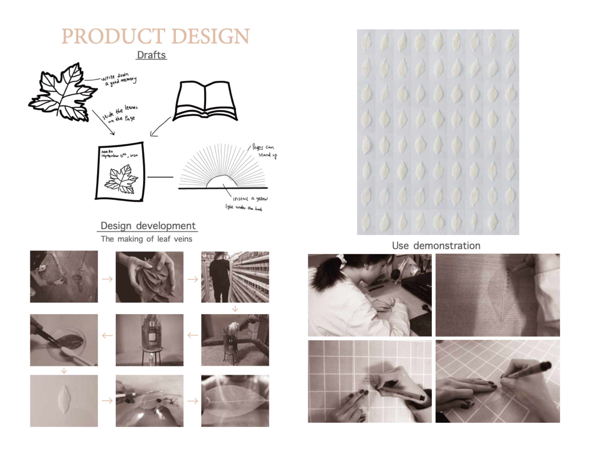
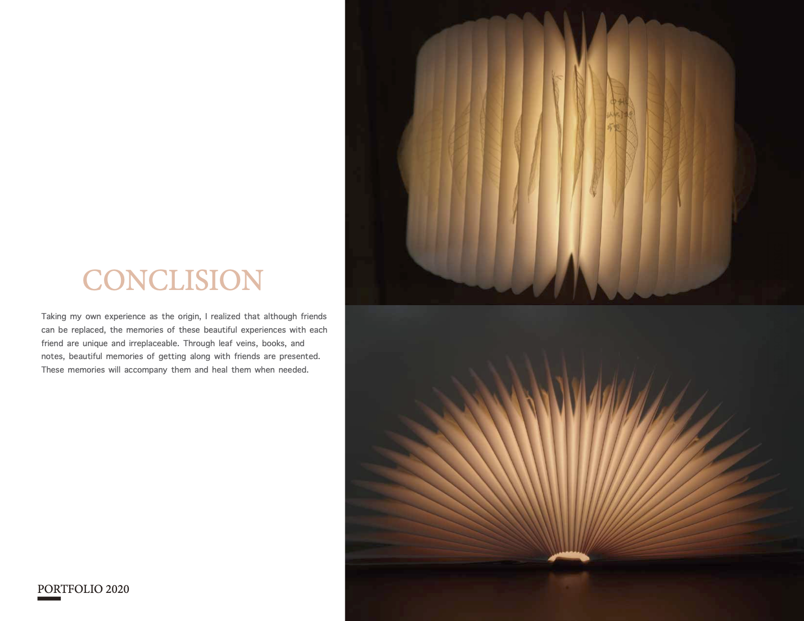

THE BOOK OF HEALING
Year : 2020
media : "Book"
According to the results or the survey, a maltunctioning native ramily often has a life-long adverse effect on children, and many people even spend their entire lives to heal the pain caused by the native family. According to the survey, people are more likely to feel lonely among these adverse effects.

